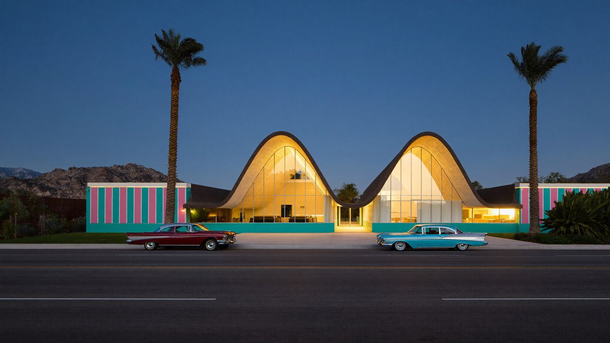
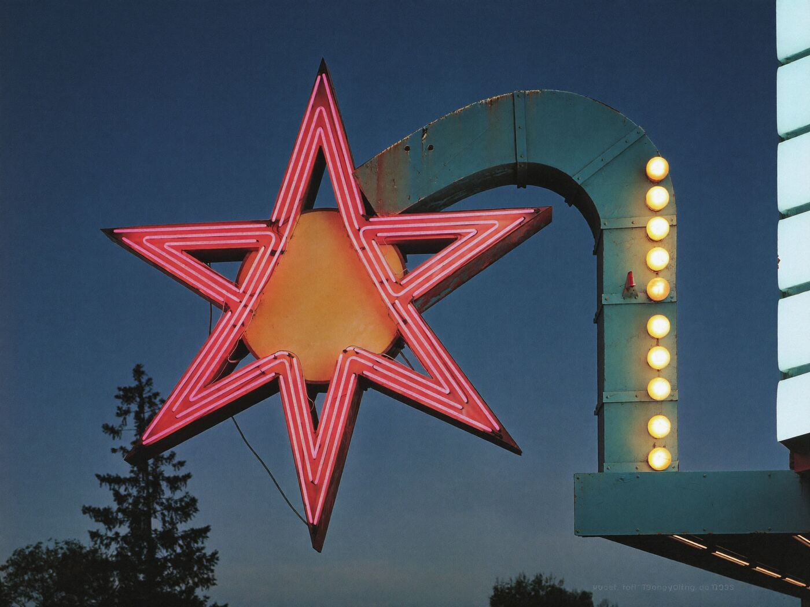

Stories · Googie
How to read a googie sign
Starbursts, boomerangs and arrows. A field guide to signs built to be read from a moving car.

Before the interstates, you found dinner and a bed by looking out the window. The businesses on the old highways knew it, so they built signs that could catch you at forty miles an hour and tell you in about two seconds that this place was new, clean, bright and open late. The style that did it best has a silly name: googie.
Where the name comes from
Googie’s was a coffee shop on Sunset Boulevard in Los Angeles, designed by the architect John Lautner and opened in 1949. Its roof tipped up toward the street like it was about to take off. In 1952 the editor Douglas Haskell wrote about the style in House & Home magazine and named it after the coffee shop, and he didn’t entirely mean it as a compliment. The name stuck anyway, and so did the look. Coffee shops, car washes, bowling alleys and motels across the West picked it up, and so did the signs out front.

The field guide
Most googie signs are built from the same small kit of parts. Here’s what to look for next time you’re on an old highway.
- The starburst. A cluster of spikes, often with a ball on each tip. It’s the atomic age and the space race in one shape, and it says “modern” without saying anything else.
- The boomerang. A curved arm or wing that sweeps out from the pole. It suggests speed, which is the whole idea beside a highway.
- The arrow. Big, bent, outlined in bulbs and pointing at the driveway.
- Chaser bulbs. Rows of round bulbs that light in sequence, so the light seems to run along the arrow. Movement catches the eye from a long way off.
- Neon. Glass tubes bent into outlines and lettering, usually pink, turquoise and red. The neon carried the name; the bulbs and the shapes did the shouting.
- The pylon. The tall pole or tower holding it all up, often angled or tapered so even the structure looks like it’s moving.
The arrow is the most honest part of the sign. It only ever says one thing: turn here.

Why so many are gone
The interstates bypassed the old highways, and the businesses that lived on passing traffic closed or switched to a plain lit box. Neon is expensive to repair, bulbs burn out, and many towns passed sign rules that limited height, size and flashing lights. A lot of googie signs went to the scrapyard. The lucky ones went to places like the Neon Museum in Las Vegas.
Where they survive, people now fight to keep them lit. Next time you pass one, slow down a little. That’s what it was built for.